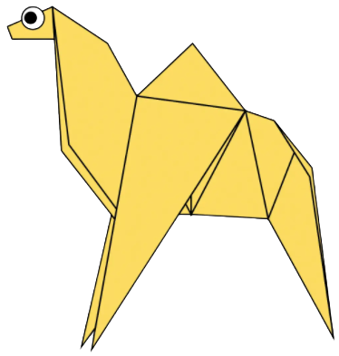
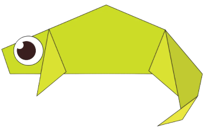
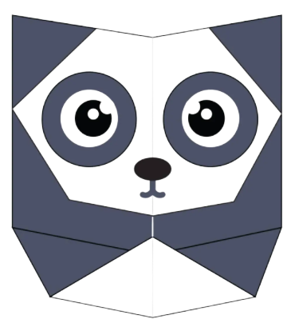
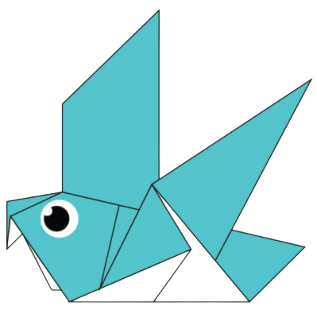
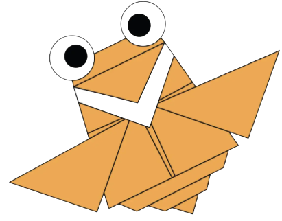
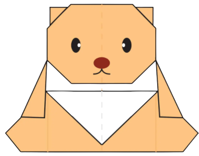

ORIGAMI OF A CAMEL
Fact-: Camels have three sets of eyelids and two rows of eyelashes to keep sand out of their eyes.
CLICK ON THE IMAGE TO KNOW HOW TO MAKE THE ORIGAMI

ORIGAMI OF A CHAMELEON
Fact-: Chameleon can change their skin colour according to the surroundings to disguise.
CLICK ON THE IMAGE TO KNOW HOW TO MAKE THE ORIGAMI

ORIGAMI OF A PANDA
Fact-: Giant pandas can also swim.
CLICK ON THE IMAGE TO KNOW HOW TO MAKE THE ORIGAMI

ORIGAMI OF A PIGEON
Fact-: Pigeons used to deliver letters during th 90's.
CLICK ON THE IMAGE TO KNOW HOW TO MAKE THE ORIGAMI

ORIGAMI OF A FLYING CICADA
Fact-: Cicadas are true bugs.
CLICK ON THE IMAGE TO KNOW HOW TO MAKE THE ORIGAMI

ORIGAMI OF A TEDDY BEAR
Fact-: The term bear-hug was first reported in 1864.
CLICK ON THE IMAGE TO KNOW HOW TO MAKE THE ORIGAMI